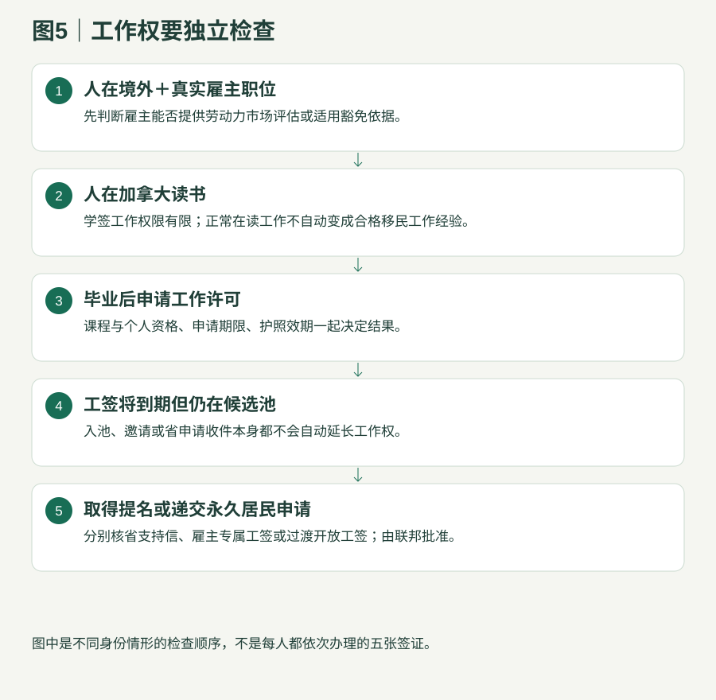

政府政策与留学路径研究
六 从入学到提名
材料、钱、身份和截止日期一起管理；区分规划用时与政府审理快照。
6.1 从境外到提名：用条件推进，不用日期保证

| 阶段／规划时间 | 完成什么 | 继续投入前的证据 |
|---|---|---|
| 出发前约3—12个月或更久 | 语言、学历等值、职业准入、资金、学校/雇主核查 | 合格语言、真实录取或职位、费用表、资金与来源 |
| 学习约2年或按具体课程 | 完成全日制课程、合法实习、持续保持资格 | 学签、出勤成绩、毕业文件、实习证明、政策复核记录 |
| 毕业后约0—6个月以上 | 申请合格工作许可、拿到相关合格职位、开始积累经验 | 毕业工签申请资格和工作授权；合同、工资、职责、工时 |
| 满足经验后，邀请等待未知 | 填意向表达、更新资料、等省按需求邀请 | 语言/工签未失效，雇主持续符合，预留无邀请的退出方案 |
| 获邀到提名 | 15天内接受并创建；创建后30天完整提交付款；等待实质审核 | 完整真实证明、持续身份、变更及时报告 |
| 提名到联邦决定，时长未知 | 按证书期限提交联邦申请、体检/准入与工签衔接 | 提名有效期、联邦清单、工作许可独立合格 |
“3—5年”只是某些两年学习方案的预算规划窗口，可能更长，也可能始终不能获邀。已经有技能和真实雇主的人应比较直接工作方案，未必需要先读两年。
6.2 工人完整准备清单：按用途归档
| 文件组 | 准备什么 | 最容易漏什么 |
|---|---|---|
| 身份家庭 | 护照全页、婚姻/离婚/出生、陪同家庭、既往移民与拒签历史 | 姓名拼写、护照效期、家庭变化 |
| 当前居留与工作 | 签证、学签、工签、延期与恢复记录、当前实际工作地 | 有效签证不等于有工作权；维持身份是否被所选类别接受 |
| 语言 | 官方认可考试报告、四项分数、考试日期及基准换算 | 入学学术类考试不能笼统代替移民考试 |
| 教育 | 毕业/学位、完整成绩、学校/课程/学制、境外学历认证或豁免证据 | 普通证书与文凭后证书的正式性质；原境外专业关联 |
| 经历 | 按年月的雇主证明、职责、工资、每周工时、合同、工资条和合法工作授权 | 职称不能替代职责；不合格学生、自雇或兼职经历不能补成全职 |
| 当前职位与雇主 | 签署邀请及合同、雇主表、注册/营业、税务收入、全职等值人数、地点、工资、工伤保险和招聘证明 | 合格工资、真实业务、雇主愿意提供材料 |
| 职业与认证 | 职业分类职责对照、许可证/注册、技工资格、幼教等级 | 移民职业清单不替代上岗要求 |
| 专项文件 | 社区背书、科技雇主行业、旅游行业/协会、医疗监管证明、执法招聘识别 | 不同分支不能相互替代 |
| 联邦衔接 | 快速通道档案、联邦类别资格、学历认证、资金；或非快速通道省提名申请材料 | 省门槛较低不代表联邦门槛自动达到 |
| 翻译与文件质量 | 非英法语原件及合格翻译；完整清晰、签名、上传格式；账户清单个案核 | 截图不能替代要求的证明或表格；不伪造流水、职责和时间 |
这是按官方6页工人材料表重组的操作清单。下载官方完整材料表；个案最终上传字段与补件要求仍以当前官方账户为准。
6.3 费用和期限：政府收费不是全部成本
| 事项 | 费用／期限（加元） |
|---|---|
| 工人意向表达 | 135；提交后按门户要求24小时内付款；有效12个月 |
| 四个工人类别完整申请 | 1,500 |
| 三种企业家意向表达 | 200；有效12个月；农场不套用此池 |
| 四个企业家完整申请 | 3,500；获邀后三种企业家一般90天商业申请 |
| 提名延期／工签支持信 | 提名延期150；204(c)或205(a)支持信申请各150；不是保证获批 |
| 复议／商业履约协议变更 | 复议250；商业协议变更150 |
| 联邦、服务和生活 | 工签/学习/永久居民等联邦费用另按当日官网；语言、翻译、体检、第三方资产核验和生活另计 |
6.4 工签到期：不能等到最后才处理

- 只有意向表达、获邀或省申请收件：没有因此自动获得延期工作的权利。
- 取得提名：按省支持信条件及联邦雇主专属许可规则核，省可收支持信费用；省支持不等于联邦批准。
- 已递永久居民申请：过渡开放工签需满足申请类别、完整性/收件阶段、在加身份等条件；非快速通道省提名还要核提名上的就业限制。
- 每位客户建立到期日台账：语言、护照、工签、社区背书、意向表达、邀请、提名；到期前至少设90/60/30天内部提醒，提醒时间是机构管理建议。
6.5 企业家材料与里程碑
| 阶段 | 材料／动作 |
|---|---|
| 已在阿省经营的特殊分支 | 乡村、毕业生和海外毕业生企业家：递意向表达前已实际经营至少1年且符合全部适用条件者，不再一律要求申请后额外经营1年；仍持续经营至永久居民决定，按对应官方既有企业流程核。 |
| 商业意向前 | 企业所有权、管理职责、财务和税务、学历语言、家庭资产负债及合法资金来源；乡村社区或指定机构支持 |
| 商业申请 | 官方各类别清单、商业计划、第三方净资产或计划评估、合伙结构、投资/雇佣计划和专业服务费用 |
| 批准与经营 | 按个案商业履约协议；工签、抵达/启动报告、每6个月进展、银行/会计/税务和员工记录 |
| 最终报告与提名 | 证明实际达到投资、所有权、主动经营和就业等约定；不是注册公司就获得提名 |